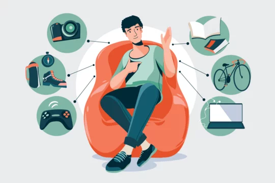

My name is Eniseyin Ibrahim Opeyemi. I am passionate about technology, learning new skills, and exploring different hobbies. I enjoy spending time reading, coding, and engaging in creative activities.
In class, I have learned the basics of HTML, including how to structure a webpage, add headings, paragraphs, and images. This knowledge will help me build simple websites and improve my web development skills.

I am an aspiring web developer, eager to learn and create interactive websites. My goal is to master HTML, CSS, and JavaScript to build amazing web applications.

I love reading novels, self-improvement books, and tech-related articles.

I enjoy playing football games like FIFA and eFootball. They are fun, competitive, and let me experience virtual football excitement.

Learning how to code excites me because it allows me to create solutions and build applications.